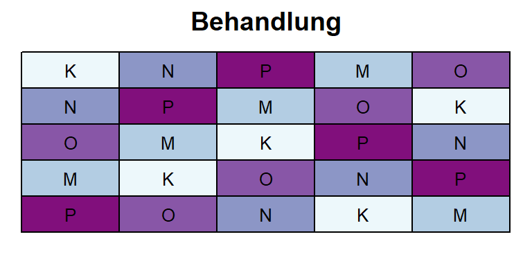
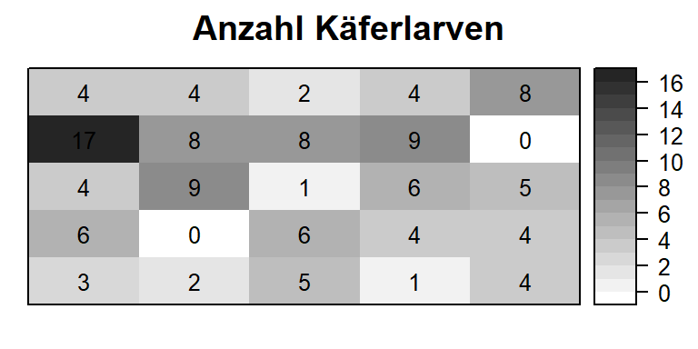
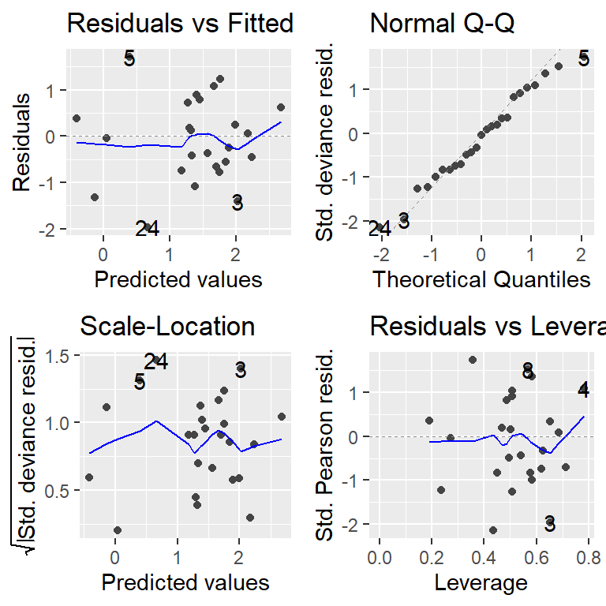
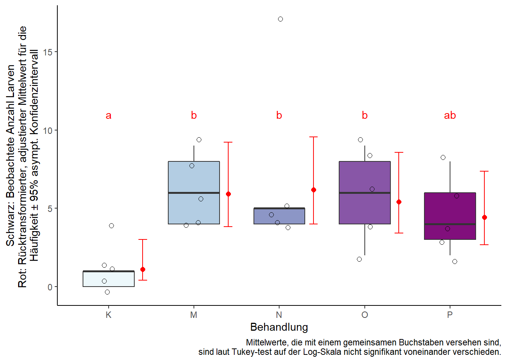

1 Beh.faktor - Lat.Quadrat - Poissondaten
Datensatz
library(data.table) # bessere Datenmanipulation
library(ggplot2); library(ggfortify) # bessere Plots
library(emmeans) # adjustierte MittelwerteIn diesem Beispiel wurden 5 verschiedene Begasungsbehandlungen für Schnellkäfer (Elateridae) mit 5 Wiederholungen getestet. Das Versuchsdesign war ein lateinisches Quadrat - sowohl die Spalten als auch die Zeilen sind also vollständige Blöcke. In jeder Parzelle wurden im Jahr nach der Behandlung die Schnellkäferlarven gezählt.


print(bugs, nrows=10)## trt row col bugs
## 1: P 1 1 3
## 2: M 2 1 6
## 3: O 3 1 4
## 4: N 4 1 17
## 5: K 5 1 4
## ---
## 21: M 1 5 4
## 22: P 2 5 4
## 23: N 3 5 5
## 24: K 4 5 0
## 25: O 5 5 8str(bugs)## Classes 'data.table' and 'data.frame': 25 obs. of 4 variables:
## $ trt : Factor w/ 5 levels "K","M",""..
## $ row : Factor w/ 5 levels "1","2",""..
## $ col : Factor w/ 5 levels "1","2",""..
## $ bugs: int 3 6 4 17 4 2 0 9 8 4 ...
## - attr(*, ".internal.selfref")=<exter..Deskriptive Statistik
Erst wollen wir ein Gefühl für den Datensatz bekommen und betrachten einen Boxplot für die Anzahl gefundener Larven pro Behandlung. Die Füllfarben die Boxen sind dieselben Farben wie im Feldplan und wurden zuvor von uns im Vektor trtfarben gespeichert - mehr Infos dazu hier.
boxplot(bugs ~ trt, col=trtfarben, data=bugs, las=2) # las=2 dreht die Achsenbeschriftung
Schließende Statistik
Generalisiertes Modell
Wie zu erkennen, ist das Auftreten der Larven ein relativ seltenes Ereignis, sodass die meisten Werte nahe 0 liegen. Wir haben also Zählwerte ohne feste Beschränkung nach oben und können uns entscheiden eine Poissonverteilung für diese Daten anzunehmen und ein entsprechendes generalisiertes lineares Modell anpassen (mehr dazu hier). Bezüglich der Effekte im Modell verfahren wir ähnlich einer einfaktoriellen ANOVA in einem RCBD, allerdings mit noch einem zweiten vollständigen Block Effekt, sodass wir Effekte für Zeilen und Spalten haben.
mod <- glm(bugs ~ trt + row + col, family=quasipoisson(link="log"), data=bugs)Wie im vorangegangenen Beispiel, legen wir die erwartete Verteileung mit dem family= statement fest. Ebenso entscheiden wir uns direkt für quasipoisson anstelle der einfacheren poisson Verteilung, da diese in gewisser Hinischt flexibler/robuster ist (mehr dazu hier). Auch hier ist der Zusatz (link="log") eigentlich überflüssig, weil dies die standardmäßige Linkfunktion für poissonverteilte Daten ist. Sie wird hier aber zur Verdeutlichung mit ins Modell geschrieben.
autoplot(mod)[1:2] # Residuenplots
Test der festen Effekte
anova(mod, test="Chisq")## Analysis of Deviance Table
##
## Model: quasipoisson, link: log
##
## Response: bugs
##
## Terms added sequentially (first to last)
##
##
## Df Deviance Resid. Df Resid. Dev Pr(>Chi)
## NULL 24 64.555
## trt 4 26.5294 20 38.026 0.001428 **
## row 4 15.6955 16 22.331 0.033385 *
## col 4 2.8225 12 19.508 0.757711
## ---
## Signif. codes: 0 '***' 0.001 '**' 0.01 '*' 0.05 '.' 0.1 ' ' 1car::Anova(mod, test.statistic="Wald")## Analysis of Deviance Table (Type II tests)
##
## Response: bugs
## Df Chisq Pr(>Chisq)
## trt 4 10.8143 0.02873 *
## row 4 9.6828 0.04612 *
## col 4 1.9627 0.74262
## ---
## Signif. codes: 0 '***' 0.001 '**' 0.01 '*' 0.05 '.' 0.1 ' ' 1Der p-Wert für den Behandlungseffekt weist in diesem Fall auf unterschiedliche Häufigkeiten der gefundenen Larven hin.
Multipler Mittelwertvergleich
Mittels des emmeans() package lassen wir uns wie im vorigen Beispiel direkt die rücktransformierten Mittelwerte schätzen. Dazu muss lediglich type="response" hinzugefügt werden.
means <- emmeans(mod, pairwise ~ trt, type="response") # Mittelwertvergleiche
means <- CLD(means$emmeans, Letters = letters) # Buchstabenddarstellung
means$.group <- gsub(" ", "", means$.group, fixed = TRUE) # Entferne Leerzeichen
means## trt rate SE df asymp.LCL asymp.UCL .group
## K 1.12 0.563 Inf 0.415 3.00 a
## P 4.44 1.150 Inf 2.668 7.37 ab
## O 5.42 1.271 Inf 3.423 8.58 b
## M 5.93 1.335 Inf 3.819 9.22 b
## N 6.18 1.373 Inf 4.002 9.56 b
##
## Results are averaged over the levels of: row, col
## Confidence level used: 0.95
## Intervals are back-transformed from the log scale
## P value adjustment: tukey method for comparing a family of 5 estimates
## Tests are performed on the log scale
## significance level used: alpha = 0.05Ergebnisaufbereitung
ggplot() + theme_classic() +
# Rohdaten (bugs)
geom_boxplot(data=bugs, aes(x=trt, y=bugs), outlier.shape=NA, width=0.6, fill=trtfarben) +
geom_jitter(data=bugs, aes(x=trt, y=bugs), width=0.1, shape=1, size=2) +
# Ergebnisse (means)
geom_point(data=means, aes(x=as.numeric(trt)+0.4, y=rate), col="red", shape=16, size=2) +
geom_errorbar(data=means, aes(x=as.numeric(trt)+0.4, ymin=asymp.LCL, ymax=asymp.UCL), col="red", width=0.1) +
geom_text(data=means, aes(x=trt, y=11, label =.group), col="red") +
labs(y="Schwarz: Beobachtete Anzahl Larven\nRot: Rücktransformierter, adjustierter Mittelwert für die \nHäufigkeit ± 95% asympt. Konfidenzintervall", x="Behandlung",
caption="Mittelwerte, die mit einem gemeinsamen Buchstaben versehen sind,\n sind laut Tukey-test auf der Log-Skala nicht signifikant voneinander verschieden.")